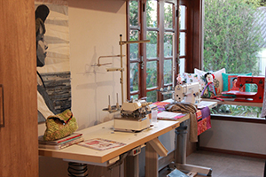
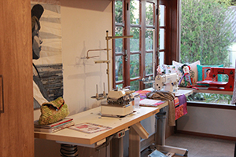

Quem somos
O Adriana Azeredo Atelier é um espaço idealizado para uma troca de conhecimentos sobre artes manuais, patchwork, jardinagem, culinária e o que mais as mentes inquietas e criativas desejarem. As turmas que passam por aqui, levam um pouquinho de mim e também me alimentam com mais vontade de aprender e compartilhar conhecimento. Eu sou uma “quase” agrônoma, graduada em jornalismo e me considero uma artesã de tecidos e de vivências. No ano em que completei 50 anos me presenteei com este lugar, bem do jeito que sonhei... com verdes... flores... e muito colorido, criações, conversas e risadas gostosas.
O Adriana Azeredo Atelier é um espaço idealizado para uma troca de conhecimentos sobre artes manuais, patchwork, jardinagem, culinária e o que mais as mentes inquietas e criativas desejarem. As turmas que passam por aqui, levam um pouquinho de mim e também me alimentam com mais vontade de aprender e compartilhar conhecimento. Eu sou uma “quase” agrônoma, graduada em jornalismo e me considero uma artesã de tecidos e de vivências. No ano em que completei 50 anos me presenteei com este lugar, bem do jeito que sonhei... com verdes... flores... e muito colorido, criações, conversas e risadas gostosas.
Técnicas
No atelier disponibilizamos aulas regulares de patchwork, art quilt, costura criativa, bordado e crochê. Demais técnicas entram no nosso "cardápio" de Oficinas.
No atelier disponibilizamos aulas regulares de patchwork, art quilt, costura criativa, bordado e crochê. Demais técnicas entram no nosso "cardápio" de Oficinas.
Cursos e Oficinas
O Atelier Adriana Azeredo tem como objetivo compartilhar conhecimentos, por isso não se detém aos cursos regulares, disponibilizando várias técnicas e professores capacitados para execução das mesmas. As oficinas acontecem em horários distintos aos dos cursos regulares, com vagas limitadas de acordo com o tipo de trabalho a ser executados e com inscrições antecipadas aqui mesmo pelo site. Sua vaga estará garantida, mediante a confirmação do pagamento.
So crazy!!! Figuras geométricas flutuantes! Está é a proposta super “descolada” de Lia Rosabel em uma oficina surpreendente. Discípula de Marinaldo Ferreira, a mestra estará no Atelier no dia 9 de novembro, turno manhã e tarde! Matrículas abertas! Investimento 170,00. Maiores informações pelo WhatsApp (53)999680772.
O Atelier Adriana Azeredo tem como objetivo compartilhar conhecimentos, por isso não se detém aos cursos regulares, disponibilizando várias técnicas e professores capacitados para execução das mesmas. As oficinas acontecem em horários distintos aos dos cursos regulares, com vagas limitadas de acordo com o tipo de trabalho a ser executados e com inscrições antecipadas aqui mesmo pelo site. Sua vaga estará garantida, mediante a confirmação do pagamento.


 
